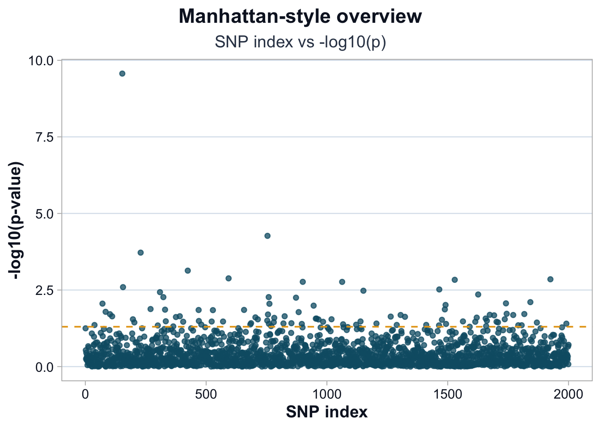
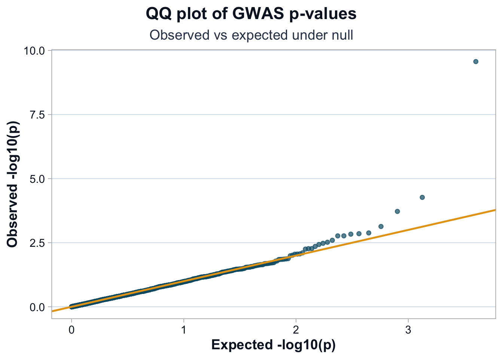

source("scripts/R/cdi-plot-theme.R")
library(ggplot2)
pheno <- read.csv("data/demo-phenotype.csv", stringsAsFactors = FALSE)
covar <- read.csv("data/demo-covariates.csv", stringsAsFactors = FALSE)
geno <- read.csv("data/demo-genotypes.csv", row.names = 1)
df <- merge(pheno, covar, by = "sample_id")
common_ids <- intersect(df$sample_id, rownames(geno))
df <- df[match(common_ids, df$sample_id), ]
geno <- geno[common_ids, , drop = FALSE]
test_snp_lm <- function(x, df){
if (any(is.na(x))){
x[is.na(x)] <- mean(x, na.rm = TRUE)
}
fit <- lm(trait ~ x + age + sex + PC1 + PC2, data = df)
co <- summary(fit)$coefficients
c(
beta = unname(co["x", "Estimate"]),
se = unname(co["x", "Std. Error"]),
p = unname(co["x", "Pr(>|t|)"])
)
}
res <- t(apply(geno, 2, test_snp_lm, df = df))
res <- as.data.frame(res)
res$snp <- rownames(res)
res$logp <- -log10(res$p)Lesson 5: Visualizing and Validating Association Signals
Why Visualization Matters
Association testing produces a table of p-values and effect sizes.
But raw tables do not reveal:
- global inflation
- systematic bias
- signal concentration
- whether top hits stand out from background noise
Visualization turns a list of p-values into a structure we can interpret.
Recompute GWAS Results
We regenerate results to ensure this lesson is self-contained.
Manhattan-Style Plot (Conceptual)
In real GWAS, SNPs are ordered by chromosome and position.
In this demo, we plot SNP index vs –log10(p).
res$index <- seq_len(nrow(res))
pal <- cdi_palette()
ggplot(res, aes(x = index, y = logp)) +
geom_point(color = pal$teal, alpha = 0.75, size = 1.6) +
geom_hline(yintercept = -log10(0.05), linetype = "dashed", color = pal$highlight) +
labs(
title = "Manhattan-style overview",
subtitle = "SNP index vs -log10(p)",
x = "SNP index",
y = "-log10(p-value)"
) +
cdi_theme()
Interpretation
Points rising above the dashed line represent nominally significant variants.
However:
- Nominal significance is not genome-wide significance.
- Isolated peaks are more convincing than diffuse elevation.
- Widespread elevation suggests inflation or confounding.
QQ Plot
A QQ plot compares observed p-values to those expected under the null.
observed <- sort(res$p)
expected <- ppoints(length(observed))
qq_df <- data.frame(
expected = -log10(expected),
observed = -log10(observed)
)
pal <- cdi_palette()
ggplot(qq_df, aes(x = expected, y = observed)) +
geom_point(color = pal$teal, alpha = 0.7, size = 1.6) +
geom_abline(intercept = 0, slope = 1, color = pal$highlight, linewidth = 0.9) +
labs(
title = "QQ plot of GWAS p-values",
subtitle = "Observed vs expected under null",
x = "Expected -log10(p)",
y = "Observed -log10(p)"
) +
cdi_theme()
Interpretation
If points closely follow the diagonal, the test statistics are well calibrated.
Upward deviation at the tail suggests real signals.
Systematic upward deviation across the range suggests inflation.
Genomic Inflation Factor (Lambda)
We quantify inflation using lambda.
chisq <- qchisq(1 - res$p, df = 1)
lambda <- median(chisq, na.rm = TRUE) / qchisq(0.5, df = 1)
lambda[1] 0.9738986Interpretation
- Lambda ≈ 1 indicates well-calibrated statistics.
- Lambda > 1 suggests inflation (structure, confounding, or model misspecification).
- Lambda < 1 suggests overcorrection or conservative testing.
Lambda is a diagnostic, not a verdict.
What This Lesson Adds
Association tables become interpretable when visualized.
We now have tools to detect:
- global inflation
- structured bias
- isolated strong signals
- tail behavior
Only after these diagnostics can we responsibly interpret top hits.
Lesson 6 moves from statistical signal to biological calibration.